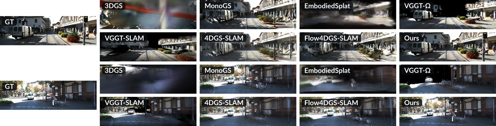

4DGS-WAM：基于四维 Gaussian Splatting 的对象中心世界动作模型4DGS-WAM: Bridging Past and Future with an Object-Centric World Action Model based on 4D Gaussian Splatting
直接连接 4D spatial perception、object-centric mapping 和 robotic world model，方向价值高于当前实验成熟度。
一句话工作总结
将持久 4D 表示连接到动作预测，为动态建图、世界模型和预测式规划提供桥接思路，但仍需关注其 work-in-progress 状态。
完整单篇海报（待补全）
当前记录尚未达到完整海报质量门槛，暂不把摘要或评分理由冒充方法/实验结论。
待补字段：核心结论、动机与问题、方法总览、关键技术细节、实验设置、实验数字与比较。下一次任务需从论文全文或官方 HTML 提取证据后再发布。
摘要
4DGS-WAM 分离动态对象与静态背景，用策略模型预测动作、世界模型预测对象 Gaussian 的变换；未来状态复用已经观测的静态内容，把预测集中在动态对象演化上。
Current world action models (WAMs) typically operate on 2D visual data. These models can achieve exceptional visual quality, but they lack explicit spatial structure for individual objects and repeatedly process redundant background content. Although point clouds can represent the world in 3D space, they can be difficult to align and accumulate across viewpoints. In this paper, we leverage an explicit 4D Gaussian Splatting (4DGS) representation that separately models dynamic objects and the static background of a scene. For dynamic objects, we use a policy model to predict future actor actions and a world model to predict transformations of their observed Gaussian splats. The static background need not be regenerated for future states, as much of it has already been observed in past frames. This forms an object-centric world action model, which we name 4DGS-WAM. It lifts 2D observations into a persistent 4D representation so that previously observed static content can be reused during future prediction. Future-state extrapolation can then focus on modeling the evolution of dynamic objects. Experiments on KITTI-MOT evaluate short-horizon prediction and past reconstruction.
图表/页面预览

{kind=link}
